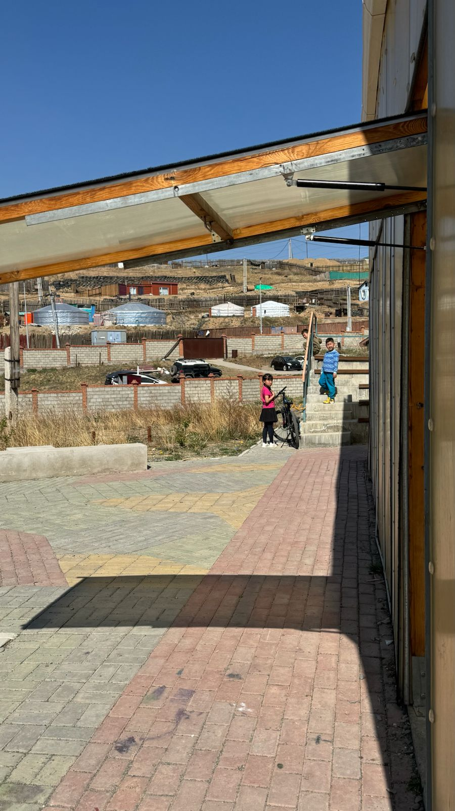
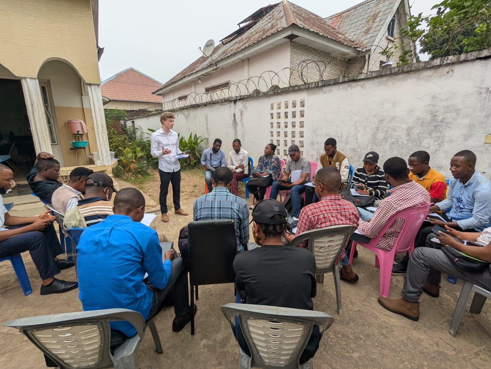
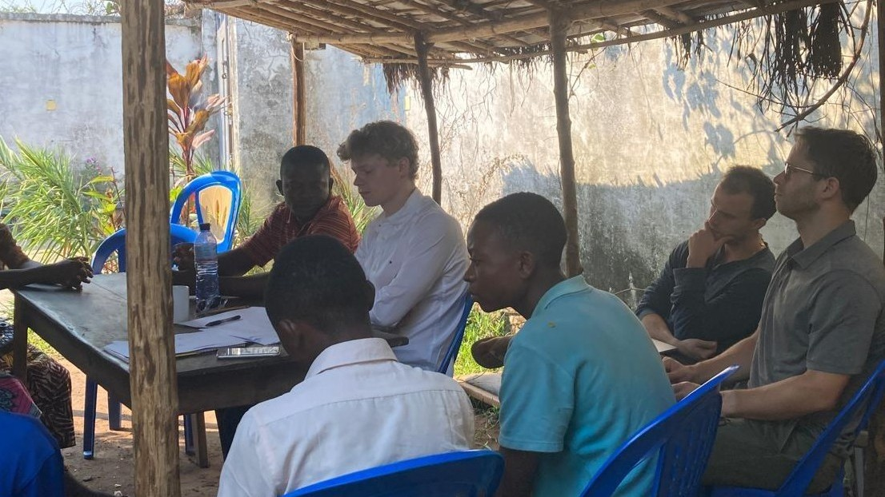

Home
CV
Research
Data/Program
Teaching
Meet Me

Predicting and Addressing Poverty in Real-time: Evidence from Mongolia’s VAT system
with Pierre Bachas

Bargaining over Taxes: Experimental Evidence from the DR. Congo

Prosperity Faith in Weak States: Randomized Evidence on Tax Collection in the DRC
with G. Granato, J. Weigel
Church-State Competition in Industrializing France